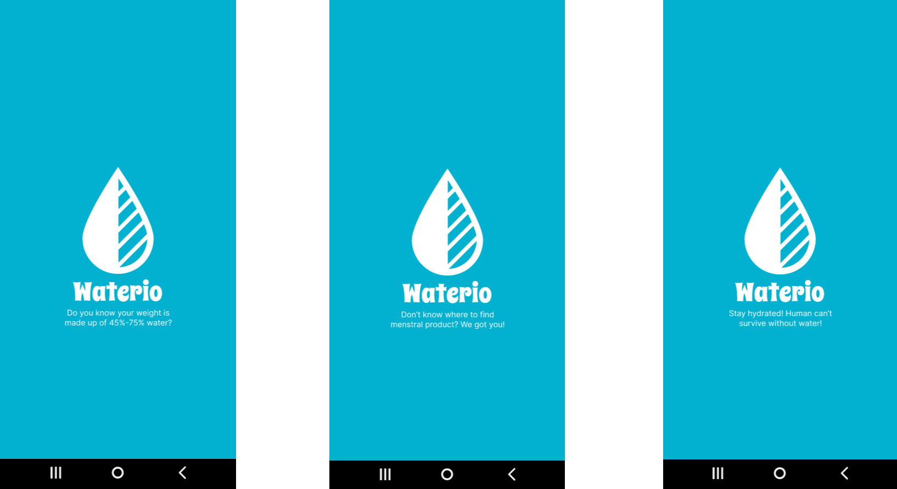

Waterio is an app designed to help female and transgender individuals locate menstrual products, restrooms, and water fountains. It aims to make daily life safer and more convenient by offering quick access to essential resources.
The goal was to tackle challenges in accessing menstrual products and restrooms. We aimed to create a user-friendly navigation app that makes it easy to find nearby essentials like menstrual supplies, restrooms, and water fountains.
I led user research, interface design, and usability testing to ensure Waterio was accessible and intuitive for our audience.


Design tools included Adobe Photoshop, Illustrator, and Figma.
Inspired by Google’s Material Design, the app features a clean interface using cerulean blue and Sedona orange for strong contrast. We used the Roboto font for clarity and included a homepage navigation pattern to streamline access.
We gathered insights from participants aged 20–30 across Hong Kong, China, and the US. Interviews and surveys highlighted everyday pain points in locating menstrual products and restrooms.
The app stood out for addressing a real need with an emotionally engaging interface. Some initial confusion and minor bugs were noted, with opportunities to expand features and address competition from larger navigation apps.
Using Figma, I created wireframes and prototypes to test navigation and visual layout. Paper prototypes were also used for early testing.
I explored React Native for building the app and integrated Google Maps API for geolocation. A high-res prototype was finalized for user testing.
Usability testing revealed strengths in design and concept clarity. Feedback helped us improve onboarding and the rating feature for better clarity.
Participants easily understood and completed tasks like navigation and location ratings. Users loved the animations, though we identified areas to improve clarity and flow in the startup screen and overlays.
Notable feedback:
To better understand our audience, we conducted market research and user surveys.
To maintain engagement, we added animations and fun feedback like “thank you” messages and a “yay you made it” screen.
Waterio successfully delivered a prototype that made essential amenities easier to find. It received positive feedback for its clear design and inclusive approach.

For more details, please contact me!